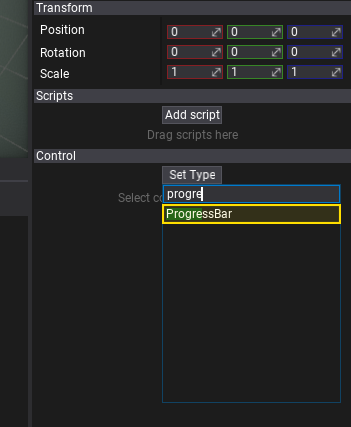
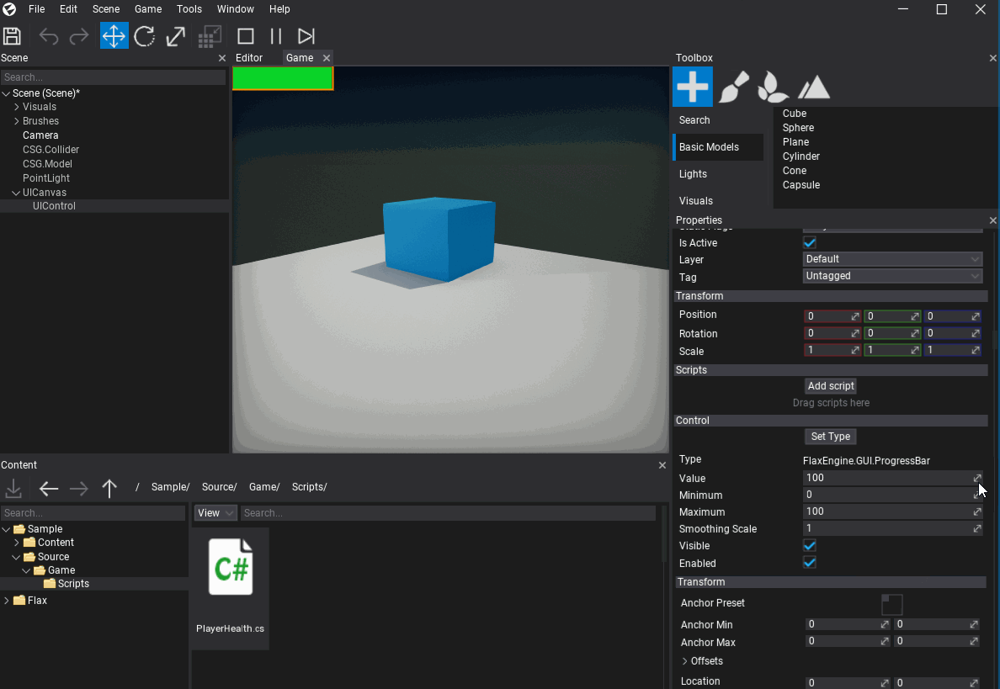
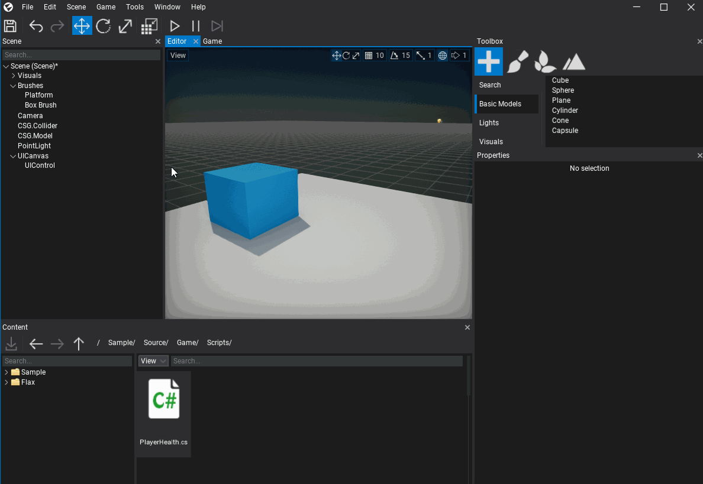
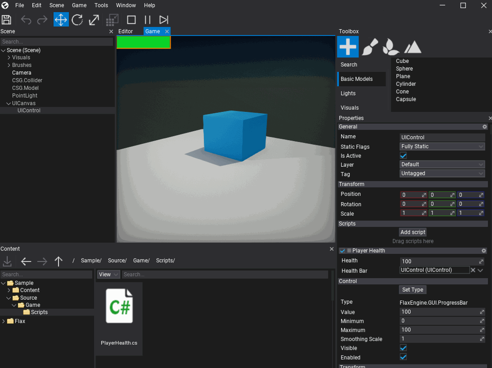

HOWTO: Create a UI
In this tutorial, you will learn how to create a user interface for your game. Follow these steps to prepare a simple heath bar for your player.
1. Create a UICanvas
The first step is to add UI Canvas actor which is used to render GUI controls. It supports rendering GUI in 'Screen Space', 'World Space', and 'Camera Space'. Use the default option - Screen Space.
To spawn a UI Canvas use the 'Toolbox' window by dragging and dropping the UI Canvas from GUI section. Alternatively, you can use a Scene Tree window with a dedicated context menu for adding new scene objects.

2. Create a UIControl
Follow the same steps as in the previous step, except now create a UI Control actor that represents a single GUI control. Add it as a child to the UI Canvas (as shown in a picture below).

3. Set the control type to Progress Bar
The created GUI will use a Progress Bar control to visualize the player's health level. To do so, select the spawned UI Control and use Set Type button to assign its type to Progress Bar. Pick the item from the list or type to search it.

Then the UI Control actor will link the created control to the GUI. Show the Game window tab to see the progress bar. You can adjust its properties using the panel below the Set Type button.

4. Create a PlayerHealth script
Add a new script named PlayerHealth that will control the player's health level and update the progress bar to visualize it. To learn more about creating and using scripts see this tutorial.
5. Edit the script
Open the script file and write the following code:
using FlaxEngine;
using FlaxEngine.GUI;
namespace Game
{
public class PlayerHealth : Script
{
[Limit(0, 100), Tooltip("The current player health (in range 0-100)")]
public float Health { get; set; } = 100.0f;
[Tooltip("Reference to the player health progress bar control")]
public UIControl HealthBar { get; set; }
private ProgressBar _healthBar;
public override void OnStart()
{
if (HealthBar == null || !HealthBar.Is<ProgressBar>())
{
Debug.LogError("Missing or invalid health bar control");
return;
}
_healthBar = HealthBar.Get<ProgressBar>();
}
public override void OnUpdate()
{
if (Input.GetKey(KeyboardKeys.Q))
Health -= 5;
if (Input.GetKey(KeyboardKeys.E))
Health += 5;
Health = Mathf.Clamp(Health, 0, 100);
_healthBar.Value = Health;
}
}
}
6. Add the script to the player
Now drag and drop the script to the player actor.
7. Link the Progress Bar control reference to the Player Health script
Select the player actor, next drag and drop the UIControl actor created in step no. 2 to assign a reference to it for the script.

8. Test it out!
Finally, hit the Play button (or F5 key) and test the player health controller by using the Q and E keys to change it down or up.
Later you can link your existing gameplay logic to visualize the player's health level or create more of a HUD for your game.
